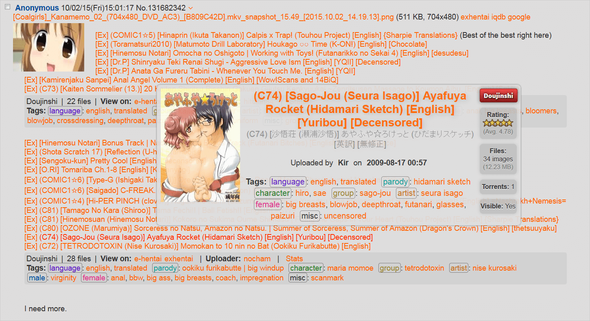

Click here to install H-links
H-links is a heavily modified fork of ExLinks with many improvements and added features. It works on Firefox and Chrome browsers to make your Sad Panda threads more productive. The following images showcase some of its features.

Linkification and details hovering
Also works well on dark themes
Filtering comiket,
english,
decensored, and
touhou project.
The Easy List
New Features
- Filtering - Apply custom highlighting rules based on the title, tags, and uploader of a gallery, similar to 4chan-x filtering.
- Easy List - A popup that displays every link in the thread with its full details. This lets you skip the drama of a thread.
- Extended gallery info - Namespaces are now displayed on the tags after the hovering details of a gallery are displayed.
- Additional URL linkification - Links from nhentai.net and hitomi.la are also linkified and displayed, just like the e*hentai.org sites.
- ExSauce for JPEG* - ExSauce now works for colored .jpg images, but only on Firefox. Tampermonkey's GM_xmlhttpRequest API is not compatible enough to support this.
- Theme detection - Dark site themes can now be detected and element styling will be updated accordingly.
- Support for 8chan - Added under "tinyboard" support. Might not be perfect, but it mostly works.
- Cross-site settings - Settings are now preserved across websites, http/https, and incognito mode.
Improvements
- Styling - Improved styling on many elements, including things like better contrast and detail hovering positioning.
- Post inlining - Post controls, such as the actions box that appears when clicking the [Ex] button, now work properly in inlined replies.
- Error information - Failed gallery fetches now display the error message the server gave rather than just "Invalled Gallery Key".
- Google font load deferred - ExLinks inserts a Google font on page load, even if there are no relevant links on the page. H-links defers this until it's actually needed.
- Better debugging - The cache can now be more easily debugged with the addition of a no-cache option and a button to clear the cache.
Changes
- Namespace prefixing - Styles, attributes, ids, and saved settings are now prefixed to make any potential name conflicts more rare.
- Removed settings - Several settings have been removed as they were redundant, unnecessary, or should be something that the script should account for.
- Obsolete features - Removed support for 4chan Style Script and some elements that no longer work correctly with OneeChan.
Installation (Chrome)
- Make sure you have Tampermonkey.
- Install the userscript by clicking the big install link above.
Installation (Firefox)
- Make sure you have Greasemonkey.
- Install the userscript by clicking the big install link above.
Troubleshooting
If something seems to be failing, make sure all of your software is up to date. Then, when something else goes wrong, file an issue request.